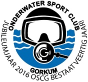
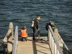

 De Onderwatersportclub gorkum (OSCG) is opgericht in 1976. Door de jaren heen is de vereniging gegroeid tot een ledenaantal van 80 a 100 leden.
Leden van OSCG doen vooral veel aan duiken. Met name in de warme maanden van het jaar wordt er veel gedoken. Het buitenwater is dan lekker warm en duiken is dan erg comfortabel. Veel leden duiken in in het Grevelingenmeer of de Oosterschelde, maar ook in plassen of afgravingen in de buurt van Gorinchem, zoals De Beldert, Everstein, Zandput naarbij Raamsdonkveer .
In de koudere maanden duiken sommige leden ook gewoon in het buitenwater. De meeste leden vinden het dan te koud worden en gebruiken de vrijdagavond om in het zwembad te zwemmen of duiken. Vanaf september starten de meeste opleidingen weer, dus kunnen de wintermaanden goed besteed worden aan het verbeteren van de duikvaardigheden. Ook zijn er 's winters verenigingsavonden in het zwembad, zoals de jaarlijks clubwedstrijd,persluchtavonden.
's Zomers helpen duikers van onze vereniging jaarlijks bij allerlei wateractiviteiten in de omgeving, zoals 'fiets'm erin'. Dankzij onze duikers kunnen deze activiteiten veilig plaatsvinden. Natuurlijk doen we dat graag! Ook helpen we jaarlijks bij de sportdag van Gorinchem Beweegt.